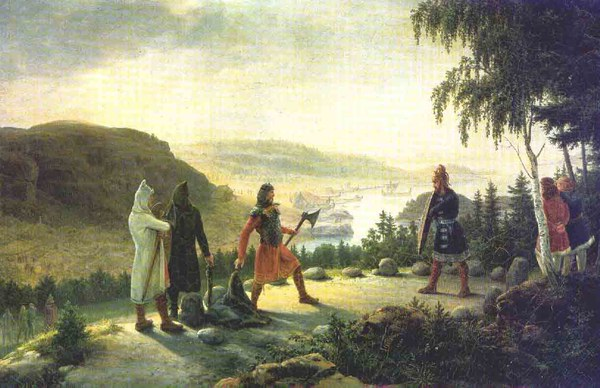

THE CARVED WORD
The greatest skald of the Viking Age carved runes that healed and runes that killed, ransomed his own head with a poem composed in one night — and has come back to make every oath in the war visible and inescapable.

THE CARVED WORD
The greatest skald of the Viking Age carved runes that healed and runes that killed, ransomed his own head with a poem composed in one night — and has come back to make every oath in the war visible and inescapable.
Feature map
Level-by-level features, as the figure refined them.
Carve the Oath
Action · 2 CE.
Tier IV · Runecaster controller · Suggested CE ability: INT · Primary verb: Carve. The rune-staff, perfected. Spoken oaths become visible runes — legible, undeniable, enforceable. Every rune carved must be true; the hand stops at a lie. Technique DC = 8 + proficiency bonus + INT modifier. Carved. A carved oath becomes Carved (no save — information, freely given, Heaven-witnessed). Terms readable by any creature (DC 10 Intelligence); no magic short of a Domain can alter or obscure them; disputing them is at disadvantage on Deception, and enforcement rolls gain +2.
When a creature within 30 ft speaks an oath aloud (battle-cries count), Egil carves it — on a surface, an object, or hanging in the air. Carved for 24 hours (permanent on stone or steel). He maintains up to 5; a sixth ends the oldest. (The runes refuse to let it hide.)
Skald's Measure
Passive.
His hand stops at a lie — a false carving fails and he knows it was false. Advantage on Insight vs. spoken falsehoods he would record; magical concealment of spoken terms fails against him. He cannot be made to carve a lie. (Truth is the edge.)
Head-Ransom Verse
Bonus action · 2 CE.
Egil composes a true verse about a creature within 60 ft — it must be true (his vow enforces this). Wisdom save against his technique DC or the target has disadvantage on attacks against Egil for 1 minute (the verse binds their regard). It may end the effect early by taking 3d8 psychic as a free action — paying the verse its due, a willing-decline Heaven honors. (Praise, truly spoken, purchases the skull.)
Curse-Rune
Action · 3 CE.
Egil inscribes a curse-rune on a creature within 30 ft that broke a Carved oath — naming it truly. A false accusation stops his hand; the CE is unspent (Heaven judges). On a true naming: Charisma save against his technique DC or 4d8 psychic damage and disadvantage on saves vs. his features for 1 minute. On success: half damage, no disadvantage (invented). (Heaven prices it. Never me.)
Nithing Pole
1-hour ritual · 5 CE.
Egil raises a nithing pole naming a true crime and its doer. The named, wherever it is, dreams of the pole: disadvantage on saves vs. his Curse-Runes until the pole falls (AC 12, 30 HP), and it knows it is named. A false crime: the pole does not rise. (Eirik fled Norway.)
The Ransom Paid
Action · 6 CE.
Egil speaks a full drapa — every stanza true. Up to 6 willing creatures within 60 ft gain temporary HP equal to INT modifier + proficiency bonus and advantage on saves vs. charm and fear for 1 minute. (True, so it holds.)
Maximum, Domain, or equivalent.
Capstone material.
Maximum: WORD-DEATH
Egil lays the curse-rune on a proven oathbreaker and compounds it: Charisma save against his technique DC or 8d10 psychic damage plus a 24-hour curse (as bestow curse, no concentration — the breaker chooses the effect). Success: half damage, no curse. The naming must be true — a false Word-Death stops his hand and ends his technique for 24 hours. (The verse reconciles — in blood.)
The Field of Runes
The carved field: every oath ever sworn within it, hanging as burning script. The sure-hit is No Secret Terms — every oath spoken inside is automatically Carved (no save; though a creature may take 3d10 force damage to swallow the words that turn, a willing-decline Heaven honors). Hostile oathbreakers take 2d10 psychic damage at initiative 20, Heaven collecting arrears. (No secret terms. Only the text.)
- Clash points
- 800
- Burnout
- 5 rounds
- Duration
- 2 minutes
- Radius
- 50-ft radius
- Activation ✦
- full-turn action
- CE cost ✦
- 20
✦ Canon: figure Domains are Specific Domains — the stated profile governs, not the player point-unlock table.
Sonatorrek
Egil speaks his death-song — the truest verse he owns. For 1 minute: Carve the Oath and Curse-Rune become bonus actions; Curse-Runes deal double damage; every oath Carved during the song is permanent, unmakeable short of Heaven's own hand. Then one level of exhaustion. (The verse does not rot.)
Build-defining options.
This technique grants Innate Technique Feats — hand-authored applications of the figure's art, available in the builder's feat picker when you select this technique.
Edge cases and shared systems.
Campaign canon notes